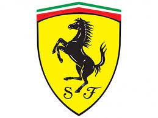
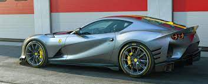
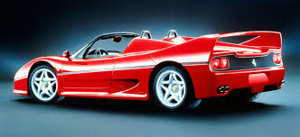
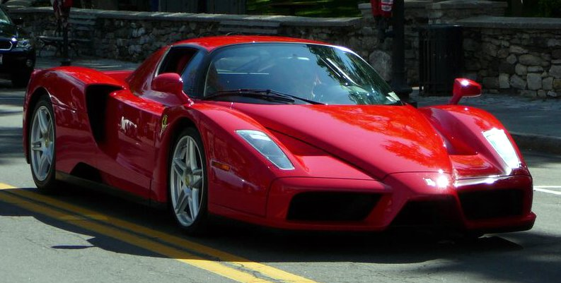

Ferrari 





Ferrari Enzo
es un automóvil superdeportivo berlinetta de 2 puertas diédricas biplaza, producido por el fabricante de automóviles italiano Ferrari entre los años 2002 y 2004. Inicialmente se pensó en una producción limitada de 349 unidades, pero en realidad se construyeron 400. Su precio base cuando nuevo era de US$ 652.890, mientras que su precio actual puede llegar a 3.000.000 €.
Ferrari FF

Ferrari FF es un automóvil deportivo de gran turismo desarrollado por el fabricante de automóviles italiano Ferrari y diseñado por Pininfarina. Fue presentado oficialmente al público en el Salón del Automóvil de Ginebra en marzo de 2011. Es el primer modelo de Ferrari con tracción total (4RM) La denominación «FF» es el acrónimo de Ferrari Four -cuatro en inglés-, que hace referencia a las cuatro plazas y la tracción a las cuatro ruedas.
Ferrari 812 Superfast
El Ferrari 812 Superfast es un automóvil Gran Turismo de 2 puertas biplaza, con motor central-delantero montado longitudinalmente y de tracción trasera, producido por el fabricante italiano Ferrari, el cual salió a la luz en el Salón del Automóvil de Ginebra el 7 de marzo de 2017. Es el sucesor del F12berlinetta.